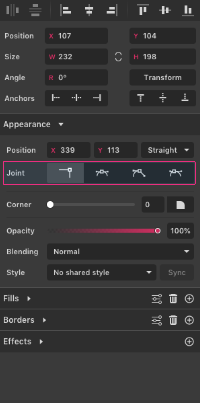
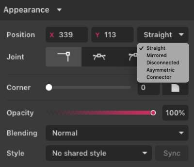
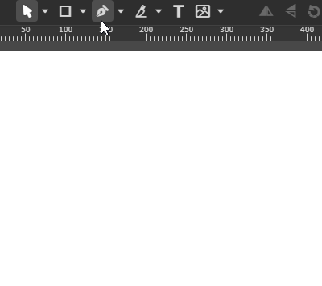
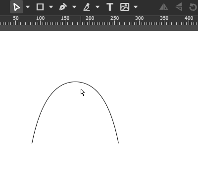
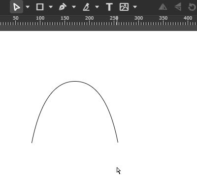
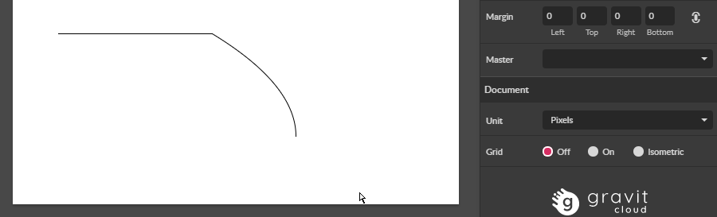
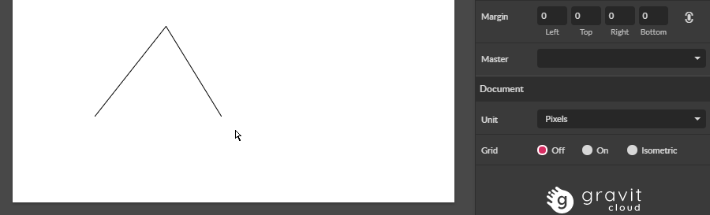

Anchor points in Gravit Designer come in six variations or “joint” types.
Four of these are readily visible in the Appearance section of the Inspector panel when you select one with the Subselect tool .


Straight joint
Shown as a small square on the canvas. A “pointed” or “sharp” corner.

- By default, it has no anchor point direction handles, but this can be changed by dragging the nearby path directly with the Subselect tool.
- Drawn with a click of the Pen tool.
- Double-clicking on a Straight anchor point will convert it to an Asymmetric joint.
Mirrored joint
Shown as a small circle on the canvas. Smooth, same (symmetrical) curvature on both sides of the point.

- Anchor point handles remain aligned and at the same lengths.
- Drawn by dragging with the Pen tool and then changing the joint type to Mirrored in Inspector panel
Disconnected joint
Shown as a small circle on the canvas. Can have different curvatures on either side of the point.
- Drawn by dragging with the Pen tool and then click to change the path direction. Also can be drawn by clicking on the point while still using the pen tool (the mouse cursor will change to indicate that there will be a change in the joint type)
- Anchor point handles can have different directions and different lengths.
- Double-clicking on a Disconnected anchor point will convert it to an Auto Asymmetric joint and double-clicking again will convert it back again.
Asymmetric joint
Shown as a small circle on the canvas. Curved but not symmetric, can have different curvatures on either side of the point.

- Anchor point handles remain aligned but can be of different lengths.
- Drawn by dragging with the Pen tool
Connector joint
Shown as a small diamond on canvas. A “tangent” joint, continuing a straight segment. This type of joint ensures always a smooth transition from a straight line to a curve.

- Cannot be drawn directly with the Pen tool
- To create: select an anchor point at the end of a straight segment, then use the drop-down list in the Inspector panel
Auto joint
Shown as a small diamond on canvas. Auto-adjusts to changes around it to maintain the curvature settings. The “Bezigon point”. To create: convert a joint to straight then Mirrored or Asymmetric.

- Cannot be drawn directly with the Pen tool, but an auto joint can be drawn by clicking with the Bezigon tool. Double-clicking on a Disconnected anchor point will convert it to an Auto Asymmetric joint and double-clicking again will convert it back again.
You can change the position of the anchor point by changing its X & Y coordinates in the Appearance section of the Inspector panel when an Anchor is selected.